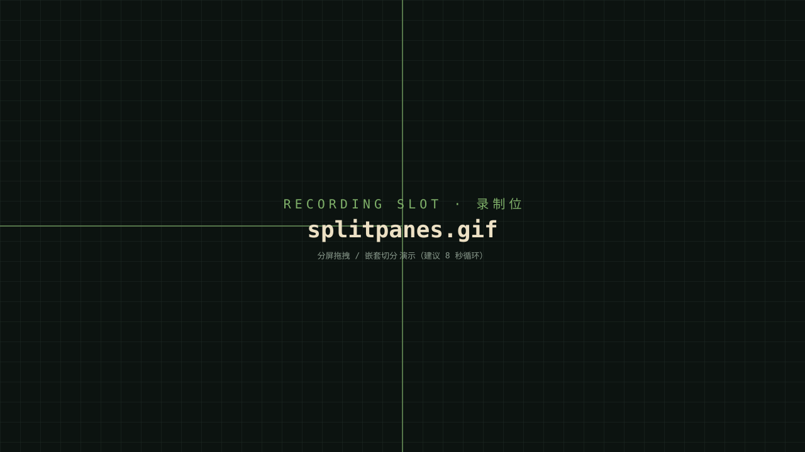
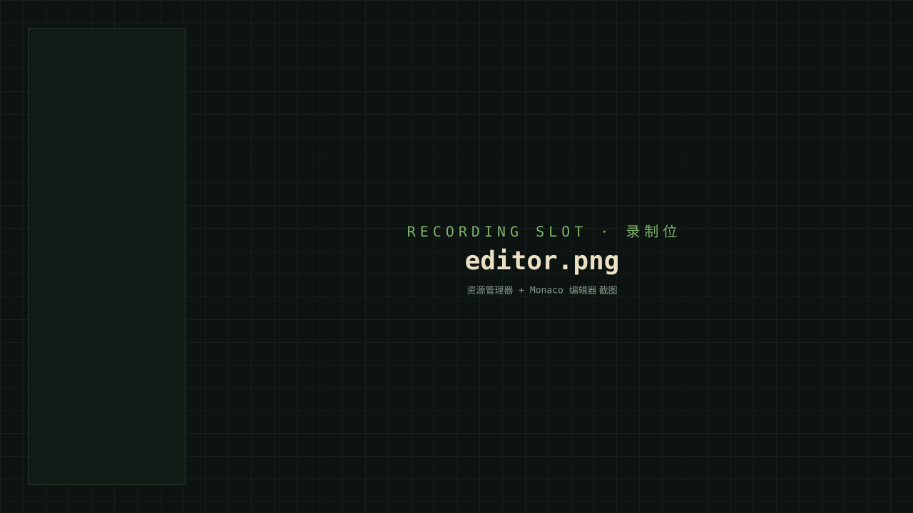
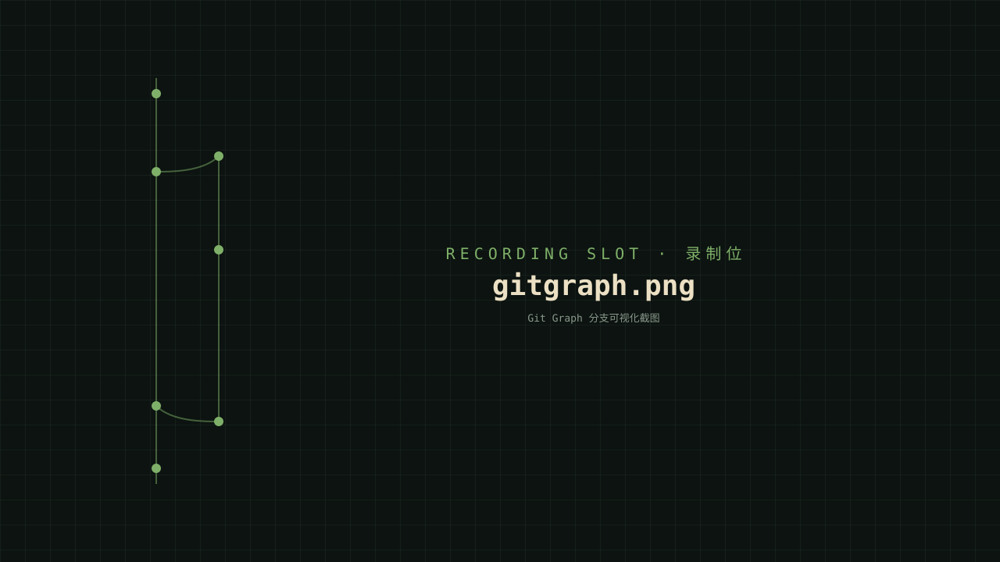
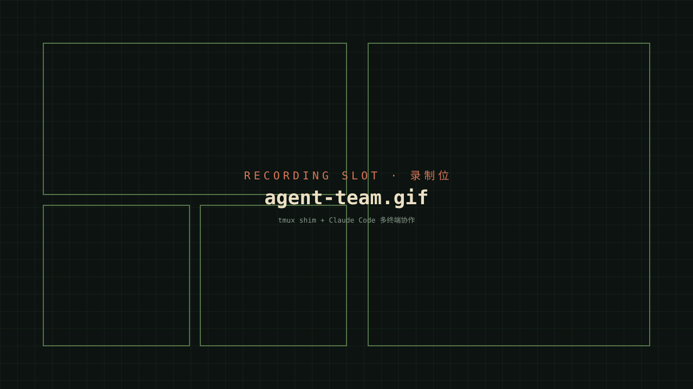
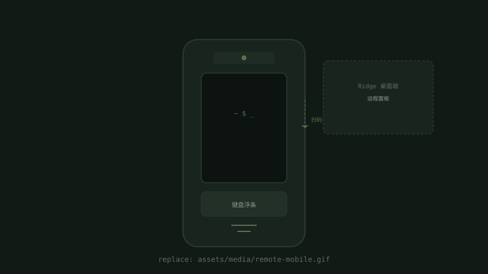

把终端、编辑器和 Git
放进同一个工作台。
Ridge 是一个本地桌面应用，提供递归分屏终端、内嵌代码编辑器和 Git 提交图。 每个分屏都是独立的会话，可以单独运行命令、编辑文件，或交给 Claude Code 协作完成。 手机也能远程连接到 Ridge 操作终端。
为日常开发流程而设计。
Ridge 把命令行、代码编辑、版本控制和智能体协作整合到同一个窗口，减少在多个独立工具之间切换的成本。手机也能远程连接到 Ridge，像在电脑上一样操作终端。
递归分屏
水平、垂直、嵌套切分都不限层数。每个分屏都是独立的终端会话，拥有自己的工作目录与命令历史。
稳定的本地终端
支持 Unicode、可点击超链接、可滚动数 MB 的命令历史。无论是 PowerShell、bash、zsh 还是 cmd，体验与原生终端一致。
嵌入式编辑器
代码编辑器与终端共享同一套分屏布局：可以把任意分屏切换为编辑器模式，文件、命令与智能体回应保持在同一视野内。
Git Graph 可视化
提交图直接渲染分支拓扑；分支选取、diff 摘要、SCM 状态会随仓库变更自动刷新，无需手动重载。
Claude Code 智能体协作
从 Ridge 内的分屏启动 Claude Code，可以直接以多分屏模式协作：智能体能列出、命名、新建、关闭分屏，并查询每个分屏的工作目录。
多工作区 / 多语境
每个工作区有独立的进程与命令历史，可同时打开多个项目；侧栏搜索会并行扫描所有打开中的目录。
手机远程控制
用手机浏览器扫一扫二维码，就能远程操作 Ridge 的所有分屏。支持虚拟键盘、文本选择与复制，手机上也能跑命令。
演示。
下面几组截图位用于呈现核心场景，正式录屏到位后会自动替换占位图。
按需分屏。
Ctrl + \ 水平切分，Ctrl + - 垂直切分，可以无限嵌套。
- 键盘快捷键 / 鼠标拖拽都能 resize
- 每个分屏独立运行，互不干扰
- 分屏标题栏显示当前目录与 Git 状态

编辑器是另一种分屏模式。
内置文件树与代码编辑器，与终端共享同一套分屏布局。打开文件不会跳出当前窗口。
- 侧栏文件树：拖拽、重命名、键盘导航
- 搜索面板：跨工作区并行查找，支持 glob 过滤与替换
- SCM 标签：暂存、提交、分支切换一站式

直接查看分支历史。
提交图直接渲染分支拓扑。每个分屏标题栏会显示当前分支与 ahead / behind 数量。
- 仓库变更后状态自动刷新
- 分支选择器内嵌「+ 创建新分支」
- 自动识别 git worktree

与 Claude Code 协作。
Ridge 兼容 Claude Code 的多分屏会话协议。可以让多个智能体并行在不同分屏上工作，输出互不干扰。
- 智能体可以列出、命名、新建、关闭分屏
- 从分屏内启动智能体，环境变量自动就绪
- 智能体可以查询每个分屏当前的工作目录

手机远程操作。
在 Ridge 左侧栏点击手机图标或打开远程面板，用手机扫一扫二维码即可连接。
- 手机浏览器实时显示 Ridge 分屏内容
- 集成虚拟键盘，支持文本选择与复制
- 局域网内自动发现，无需手动输入地址

两分钟跑起来。
源码构建需要 Node 18+、pnpm 9+、Rust 1.77+。
最新版本 v0.0.3
v0.0.3 新增手机远程控制功能，支持通过手机浏览器连接 Ridge 并操作终端。同时优化了分屏渲染性能与历史回放体验。
Ridge v0.0.3 的核心变化是引入了远程控制能力。你现在可以用手机浏览器连接到 Ridge，像在电脑前一样操作终端。同时修复了此前版本中的多项稳定性问题。
亮点
- 手机远程控制：扫码即可连接，局域网内自动发现设备
- 虚拟键盘：手机端集成虚拟键盘浮条，支持文本选择与复制
- 远程面板：桌面端远程管理界面，可查看已连接的设备列表
- TOTP 安全认证：扫码连接时一机一码，保障连接安全
- 分屏渲染性能优化：IPC 线程解耦，独立的 delta 帧渲染
- 历史回放窗口升级：WASM 历史覆盖层 + 帧耗时分析
- 编辑器稳定性修复：打开文件时重新读取磁盘、缓存清理
- IME 输入法：统一锚点、同帧跟随、ASCII 纯模式可选
- 闲置循环门控：检测闲置时自动暂停，降低后台资源占用
- Linux 支持：正式提供 Linux 构建产物（.deb / AppImage）